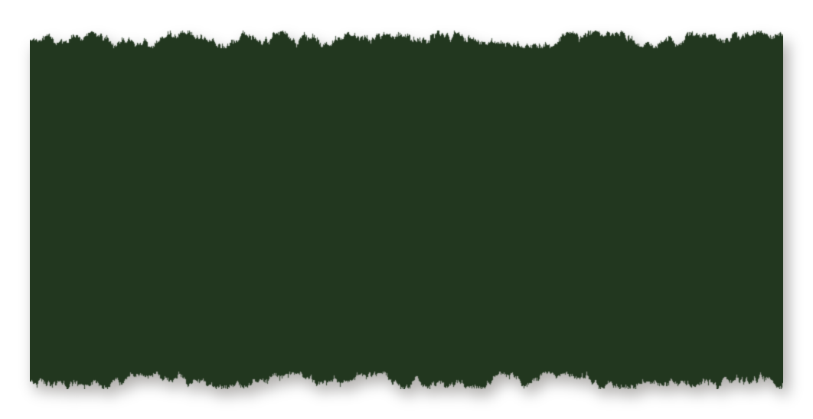
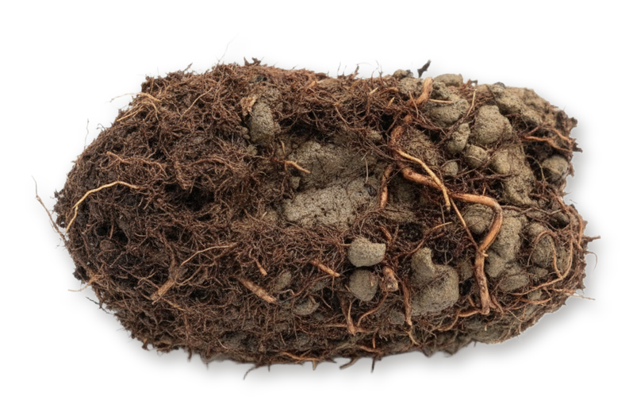
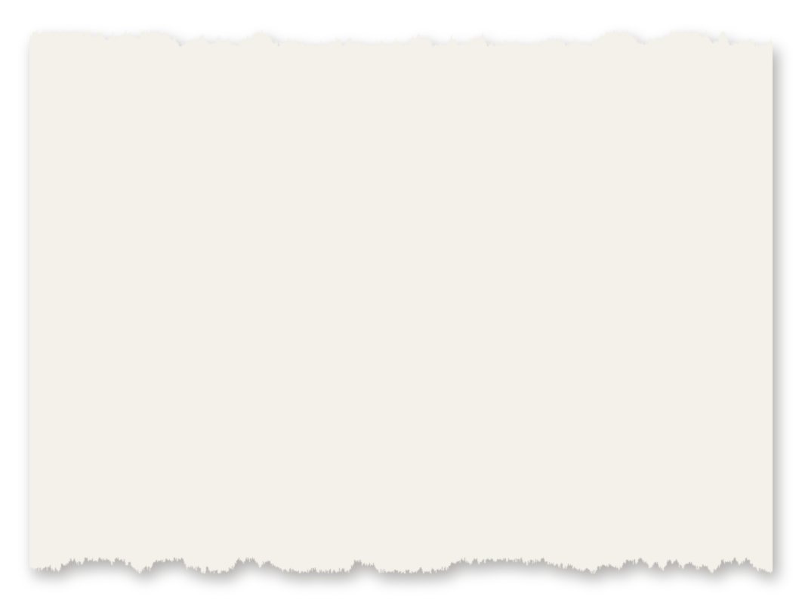
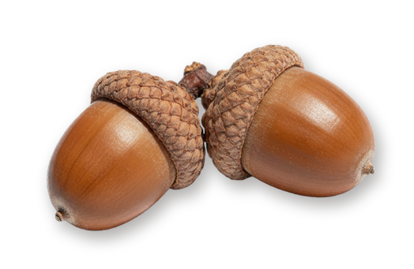

What does Regenerative actually mean?
And who gets to decide?


What does Regenerative actually mean?
And who gets to decide?
A destination
or a direction?


A certified status
or a way of thinking?